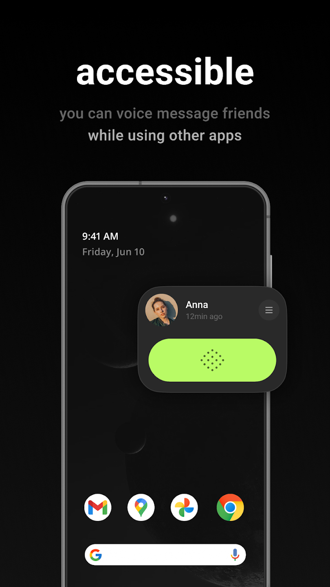
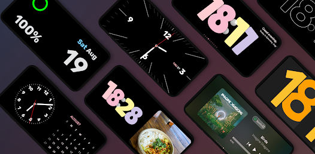
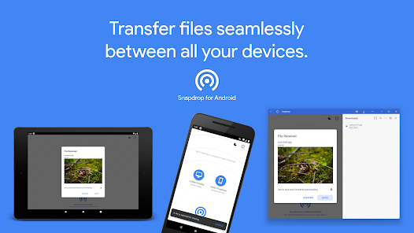

1.Touch The Notch

The area around camera cutout has alaways been useless, this app turns the camera hole into a shortcut action button to perform many action and make phone use easier.
You can set independent action for each touch, long touch, double touch and swiping both sides
Interactive Camera hole function are categorised as the following:
- Action
- -Take a screenshot!Easy way to take a screenshot by a simple touch without any floating button. Keep your device's button from tearing.
- -Toggle camera flashlight:
To use your phone as a torch easily when needed.- -Open power button menu.
In some morderns phone the power button is now mapped as an assistant button and the power menu is moved to notifications shade.- Access
- -Minized apps drawer:
A lanucher for a group of selected apps as horizontally aligned icons nest to notc. To reach your most use apps anywhere.- -Open camers.
open selfie camera on the go.- -Open selected apps.
Navigate to your favourite app directly.- -Open recent apps menu.
Navigate between currently opened apps.playstore-download2.Buz - Buz commununication Made Easy
Buz is a simple and pure audio-based instant messaging tool, solely focusing on satisfying the most direct and essential communication needs between people.
With Buz, you now don't need to unlock to hear the voice messages. It works perfectly on any system!
Using native system-level solutions, Buz is lite, small, and born to be the ideal battery as well as data saver.
You do not have to worry about missing or mishearing anything here. Buz provides chat history feature where users can always listen back to your voice messages at anytime.
Voice is the most natural and primitive way of human communication. Our vision is to create an ultimately simple communication tool that is capable of covering all devices in the future, enabling users to talk to their friends simply by opening their mouths without clicking on their phones, whenever and wherever possible.
playstore-download3.StandBy Made pro
StandBy Mode Pro turns your phone or tablet into a Smart Display while it charges. It's designed with Material Design 3 and smooth animations for an elegant desk or bedside appearance
- Main Features
- -Duo: Customize and combine widgets for a more efficient workflow. Add, remove and rearrange to fit your needs.
- -Night Mode: a feature that, when activated, applies a red tint to Widgets. This allows for seamless usage in low-light settings, minimizing sleep disruption and excessive light emission. It can also be scheduled with start and end time and customized for your liking.
- - Player Widget: Take control of your music with album cover support and beautiful gradients. Enjoy music from your favorite apps (Spotify, Apple Music, Deezer, Youtube Music and more)
- -Photo Clock & Calendar View: Showcase beautiful images alongside clock and date information or highlight the current date with our Calendar View. This feature uses AI to improve the crop of people.
- -Schedule: Stay organized with a glance at your calendar events.
- Weather:
- Fullscreen Timer & Analog Clock: From timely reminders to classic elegance, our fullscreen timers and clocks add sophistication to your Android experience
- -Solar Watch: Beautiful combination of gradients shade that will move around the day and get darker during the night following the never ending circle night and day.
- Multiple Digital and Analog Clocks:
- -Solar watch
- -Retroflip
- -Matrix Watch
- -International Space Station Clock that shows live imagery of Earth
- -Big Crop Clock inspired on Google Pixel
- -Radial Inverter that shifts pixels and it's burn-in protected by design
- -Watches contain multiple customization options, giving you hundreds of different options.
- Features
- On phone
- � Emergency SOS: Get help in an emergency by pressing the power button quickly 5 times or more. Then, your phone can:
- � Call emergency services or any number you choose
- � Share your location and critical info with your emergency contacts
- � Record, back up, and share a video
- � Emergency Sharing: Share your real-time location and critical info with your emergency contacts. Also works with Google Assistant.
- � Safety Check: Set a check-in timer for your phone to confirm you�re safe. If you don�t respond when the timer runs out, Emergency Sharing automatically starts. Also works with Google Assistant.
- � Car crash detection (Pixel phones only): Get help calling emergency services after a car crash. If your Pixel phone detects that you've been in a crash, it can call for help automatically. Not available for all countries, languages, and devices. For availability details, go to g.co/pixel/carcrashdetection.
- � Crisis alerts: Get notified about natural disasters and public emergencies near you.
- � Medical info and emergency contacts: You can make this info visible when your phone is locked. In supported countries, you can also choose to automatically share this info if you contact emergency services.
- On Pixel Watch
- � Fall Detection: Your watch can detect a hard fall and call for help.
- � Emergency SOS: Press the crown quickly 5 times or more to call emergency services or an emergency contact.
- � Emergency Sharing, Safety Check, medical info, and emergency contacts are also available on Pixel Watch.
Edge-to-Edge Screen Widgets: Set up multiple phone widgets to suit your lifestyle and preferences. Organize your screen effortlessly and elevate your productivity in ways you never thought possible. ?? Aesthetic Widgets: Express your style with side-by-side Aesthetic Widgets that complement each other beautifully. Personalize your Android experience like never before. ?? Burn-in protection: Don't worry about keeping the app open for a long time ?? Quick Launch: Seamlessly access StandBy Mode Pro when charging your phone in landscape mode, ensuring a smooth and effortless transition. ?? Notifications: Receive handy charging notifications to quickly launch StandBy Mode Pro ?? Auto Close on Portrait: Enjoy a clutter-free experience as the app automatically closes when your phone switches to portrait mode. ?? Idle Mode: Keep important information in focus with dimmed widgets during idle periods. Unlock the true potential of your Android phone and make every moment count with StandBy Mode Pro. Embrace the premium feel of iOS widgets, transform your home screen, and harness the efficiency of a virtual lock screen. Rest assured, this app optimizes battery usage to ensure you maximize your screen-on time. Discover the perfect iOS standby mode application for your Android device today! Embrace the beauty, elegance, and functionality of iOS 17 with StandBy Mode Pro. Experience Android like never before.
playstore-download4.Snapdrop & PairDrop
snapdrop & PairDrop for Android is an Android� client for the free and open source local file sharing solutions https://snapdrop.net/ and https://pairdrop.net/.
Do you also sometimes have the problem that you just need to quickly transfer a file from your phone to the PC?
USB? - Old fashioned!
Bluetooth? - Much too cumbersome and slow!
E-mail? - Please not another email I write to myself!
Snapdrop!
Snapdrop is a local file sharing solution which completely works in your browser. A bit like Apple's Airdrop, but not only for Apple devices. Windows, Linux, Android, IPhone, Mac - no problem at all!
However, even if it theoretically would fully work in your browser, you will love this app if you want to use Snapdrop more often in your daily life. Thanks to perfect integration into the Android operating system, files are sent even faster. Directly from within other apps you can select Snapdrop to share with.
Thanks to its radical simplicity, "Snapdrop for Android" makes the everyday life of hundreds of users easier. As an open source project we don't have any commercial interests but want to make the world a little bit better. Join and convince yourself!
playstore-download5.Personal Safety

Personal Safety is an app that helps you prepare and react in an emergency by quickly connecting you with the help and information you need.
- -Toggle camera flashlight: